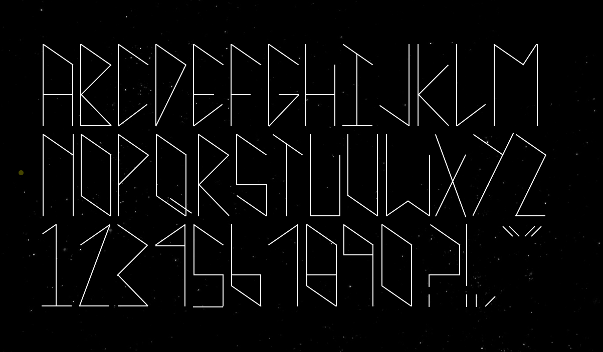
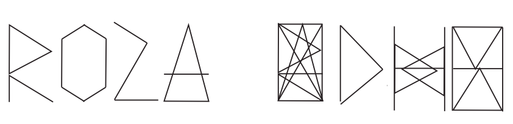
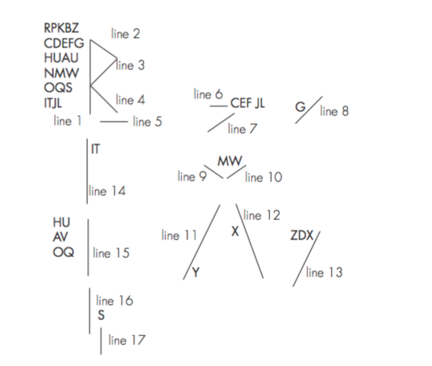
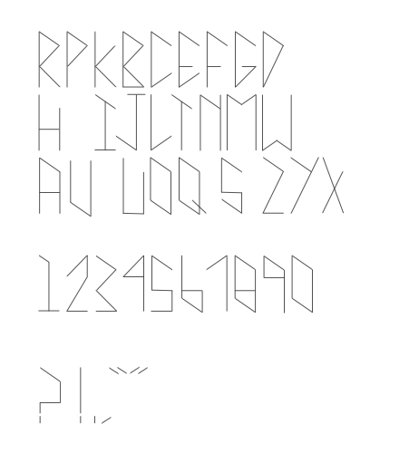

ABOUT
‧‧‧
CONTACT
CSS ASTRO TYPEFACE
A typeface built completely using HTML and CSS. Below is a video displayng the interaction, or you can visit the
link
and try it yourself.

TRY IT OUT
DIGITAL SKETCHES
  
TRY IT OUT